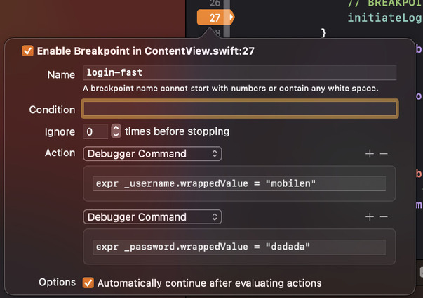

Xcode Breakpoints ile Otomatizasyon
Alper Cem Öztürk yazdı.
Uygulamanızı her test ettiğinizde oturum açma bilgilerinizi manuel olarak girmekten sıkıldıysanız ve geliştirme sırasında zaman kazanmak istiyorsanız; xcode breakpoints ihtiyacınız olan çözüm olabilir.
Breakpoints Nedir?
Breakpoint, bir programın çalışması sırasında belirli bir kod satırında duraklamasını sağlayan ve geliştiricilere programın çalışmasını izleme ve debug imkanı veren bir araçtır. Bu, değişkenlerin değerlerini incelemenize, kodda satır satır ilerlemenize ve başka işlemler yapmanıza olanak tanır.
Breakpoints Nasıl Oluşturulur?
Bir "breakpoint" ayarlamak için, duraklatmak istediğiniz kod satırı numarasının yazılı olduğu alana tıklamanız yeterlidir. "Breakpoint"'i belirtmek için sistem ayarlarında seçili olan "accent color" renginde bir işaretçi görünecektir. Her ne kadar "line numbers" ayarı varsayılan olarak açık gelse de eğer açıkta kullanmıyosanız, ilgili satırın hemen yanına tıklayabilirsiniz veya text editing ayarlarından açabilirsiniz.
Bir "breakpoint" belirledikten sonra kodunuzu çalıştırabilirsiniz. "Debugger" "breakpoint"'te duraklayacaktır. Daha sonra kodunuzu ve değişkenlerinizi incelemek için "debugger"'ın özelliklerini kullanabilirsiniz.
Breakpoint'lerin Farklı Kullanım Senaryoları
Geliştiriciler, "oturum açma" aşamalarını test etmek ve "debug" yapmak için zaman ve emek harcamalarını gerektiren birçok senaryo ile karşılaşabilirler. Breakpoints ve Watchpoints, bu amaç için oldukça kullanışlıdır. Bu kullanım senaryolarından birkaçına beraber bakalım.
Mobil bir uygulamada birden fazla kullanıcı rolü olduğunu düşünelim. Her bir rol için farklı bir oturum açma işlemi gerekebilir. Örneğin, yönetici rolü için ayrı bir oturum açma işlemi, kullanıcı rolü için ayrı bir oturum açma işlemi vb. Bu durumda, oturum açma işlemlerini otomatikleştirmek amacıyla, her bir rol için ayrı bir "breakpoint" kullanabilirsiniz.
Sadece belirli koşullar altında oturum açmayı otomatikleştirmek istiyorsanız, koşullu "breakpoint"'leri kullanabilirsiniz. Örneğin, yalnızca belirli bir kullanıcının oturum açmaya çalıştığı durumlarda oturum açmayı otomatikleştirmek isteyebilirsiniz. Bu durumda, istenen kullanıcı adı ile eşleştiğinde tetiklenen bir koşullu "breakpoint" ayarlamak işinizi görecektir.
Watchpoint'ler, oturum açma işlemi sırasında değişkenlerin değerlerini izlemek için kullanılır. "Debug" işlemi sırasında bir değişkene watchpoint eklenmesiyle, değişkenin değeri değiştiğinde programın çalışması durdurulur. Bu, oturum açma işlemi sırasında belirli değişkenlerin değerlerini izlemek istediğiniz durumlarda faydalı olabilir. Örneğin, bir parola değişkeninin doğru bir şekilde "encrypt" edilip edilmediğini kontrol etmek isteyebilirsiniz. Bu değişken üzerinde bir watchpoint ayarlayarak, doğru bir şekilde "encrypt" edildiğinden emin olabilir ve potansiyel güvenlik sorunlarını önleyebilirsiniz.
Breakpoint Expressions
"Breakpoint expressions", "debug" yapmanın güçlü bir yoludur. Yalnızca programın yürütülmesini durdurup değişkenlerin değerini izlemenin yanı sıra belirli aksiyonlar alabilmenizi sağlar. Tam olarak bu yazının başlığında belirtildiği gibi, oturum açma işlemlerini otomatik hale getirmek buna örnek olarak verilebilir.
Şimdi "breakpoint" expressions'ların nasıl çalıştığına göz atmak için, hep beraber Login XCode Breakpoints blog yazısını inceleyelim.
Öncelikle bu yazının başından beri konuştuğumuz oturum açma işlemlerini temsil edecek bir SwiftUI arayüzü tasarlayalım.
Blog yazısında da bahsedildiği gibi "fullscreen modal" olarak sunulan iki "textfield" ile örnek bir login ekranı oluşturalım. Uygulama `launchLogin()` ile başladığında, "textfield"'lar doğru bilgileri içeriyorsa "modal screen" kapatılsın ve ContentView, başarılı login mesajıyla beraber görüntülensin.
struct LoginView: View {
@State private var username: String = ""
@State private var password: String = ""
@Environment(\.dismiss) var dismiss
var body: some View {
VStack(alignment: .center, spacing: 20) {
HStack {
Image(systemName: "person")
TextField("Enter username", text: $username)
}
HStack {
Image(systemName: "key")
TextField("Enter password", text: $password)
}
Button("LOG IN") {
// BREAKPOINT HERE
initiateLogin()
}
.buttonStyle(.borderedProminent)
}
.padding()
.textFieldStyle(.roundedBorder)
}
// Login Function
func initiateLogin() {
if username == "mobilen" && password == "dadada" {
// Short pause - dismiss is too fast
DispatchQueue.main.asyncAfter(deadline: .now() + 1.0) {
dismiss()
}
}
}
}
import SwiftUI
struct ContentView: View {
@State private var isPresented = true
var body: some View {
VStack {
Text("Hello! You've successfully logged in.")
}
.onAppear {
isPresented = true
}
.fullScreenCover(isPresented: $isPresented) {
LoginView()
}
}
}
Oturum açma işlemini otomatik yapabilmek için öncelikle LoginView sayfasında ki buton'un "action"'ına bir "breakpoint" koymalıyız. Böylelikle program, çalışma sırasında kullanıcının buton aksiyonu ile beraber duraklayacaktır. Bizim istediğimiz ise, programın buton aksiyonu ile duraklamasından sonra oturum açma bilgilerimizle beraber tekrar yürütülmesi. Bunun için oluşturduğumuz "breakpoint"'e sağ tıklayarak "Edit breakpoint" seçeneğine tıklayalım.

Açılan pencerede "breakpoint"'e isim verebilir, belli koşullar altında çalışmasını ayarlayabilir veya program durduktan sonra yapılacak bir aksiyon tanımlayabiliriz. Biz buton aksiyonu sonrasında "textfield"'ları geçerli bilgiler ile doldurup, programın çalışmasına devam etmesini sağlamalıyız.
Bunu yapmak için aşağıdaki "Add Action" butonuna tıklayalım. "Action" tipinin "default" olarak "debugger command" geldiğini göreceğiz. Sonrasında ise hemen altındaki alana ise tanımlayacağımız aksiyonu `expr` komutuyla belirtelim.
`expr` komutu, "expression" kelimesinin kısaltmasıdır ve "Breakpoint Actions" bölümünde kullanılan bir komuttur. `expr` komutuyla belirlediğiniz bir değişkenin değerini değiştirebilir veya bir fonksiyonu çağırabilirsiniz. Örneğin, `expr foo = 42` ile "foo" değişkeninin değerini 42 olarak değiştirebilirsiniz.
Burada ilk action'da, _username.wrappedValue değişkeninin değerini "mobilen" ile değiştirmek için expr _username.wrappedValue = "mobilen" komutunu kullanıyoruz.
İkinci action'da ise, _password.wrappedValue değişkenin değerini "dadada" ile değiştirmek için expr _password.wrappedValue = "dadada" komutunu kullanıyoruz.
Ayrıca "Action" tipi olarak "Log Message" seçeneğini de kullanılabilir ve belirlediğiniz değişkenin değerini "Console" panelinde görüntüleyebilirsiniz. Yine "Action" tipi olarak "Sound" seçeneğini kullanabilir ve belirli bir işlem gerçekleştiğinde ses çalabilirsiniz.
Son olarak en altta bulunan Automatically continue after evaluating actions seçeneğini işaretleyelim. Bu textfield'ları geçerli bilgiler ile doldurduktan sonra, programın çalışmasına devam etmesini belirlediğimiz kısımdır. Bu yüzden "checkbox"'ı işaretlemeyi atlamamalıyız.
Tüm adımları gerçekleştirdikten sonra yapmanız gereken tek şey, kodunuzu çalıştırmak ve login butonuna tıklamak. Buton aksiyonu ile beraber "textfield"'ların geçerli bilgiler ile doldurulduğunu ve modal screen'in kapatıldığını görebilirsiniz.
Bu yazıda, "breakpoint"'leri ve kullanım senaryolarını ele aldık. Ardından Login XCode Breakpoints yazısındaki örneklerle uygulamalarımızdaki herhangi bir alanı nasıl otomatikleştirebileceğimizi öğrendik.
"Breakpoints"’leri kullanmak geliştirme sırasında zaman kazanmanıza yardımcı olabilir ve uygulamanızı her test ettiğinizde oturum açma bilgilerinizi manuel yazmak zorunda kalmadan zaman kazanabilirsiniz.